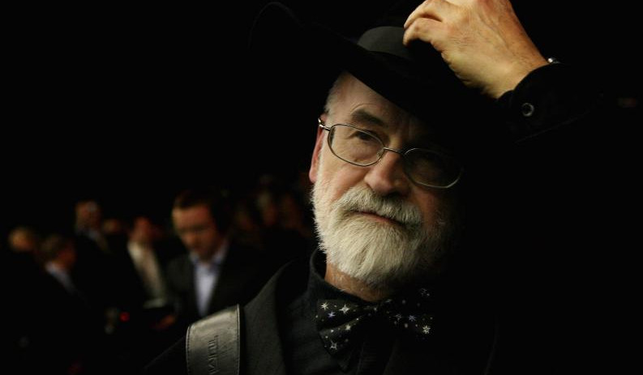

La fascinante vida de Terry Pratchett. Aunque puede haber un par de mentirijillas, ¿las ves?
El 28 de abril del año 1948, en Buckinghamshire, Terry Pratchett vino al mundo a la tierna edad de cero años.
RespuestaEs totalmente cierto. Y además coincidió con el día de su cumpleaños.
Publicó "The Hades Business", su primer relato corto, a los trece años en la revista de su colegio. La revista "Science Fantasy" lo publicó dos años después. A los diecisiete años publicó su segundo relato.
RespuestaEs la verdad, lo he leído por internet.
Estudió Periodismo y trabajó durante varios años en diarios locales antes de convertirse en el relaciones públicas de una central nuclear.
RespuestaTambién es verdad.
Es autor británico de ficción con más ventas.
RespuestaNo, J.K. Rowling le gana en ese sentido.
Comentó en varias ocasiones que escribir le ayudaba a reírse de un mundo a veces difícil de soportar. Su primer relato lo escribió tras ver una silueta de tiza dibujada en un río cerca de su localidad.
RespuestaAmos anda, ¿en qué cabeza entra una silueta dibujada en un río? Ah, sí, espera, en la de Pratchett. El río que cruza Ank-Morpork, gran ciudad donde las haya, está tan sucio que... bueno, que si alguien cae en él no se ahoga. Pero le pasan otras cosas.
Estuvo casado desde el año 1968 con Lynn Purves. Tuvo una hija, llamada Rhianna, en 1976, que también se dedicó al mundo del entretenimiento.
RespuestaVerdad. Su hija, Rhianna, es escritora. No confundir con Rihanna, la cantante.
Ha escrito más de 70 libros (casi) él solito.
RespuestaPues sí, es verdad. Unos pocos son colaboraciones con otros autores, pero la mayoría son suyos.
Ha vendido más de 70 millones de libros en 32 idiomas diferentes y los ha traducido él mismo.
RespuestaEsta no era cierta, no son 32 idiomas diferentes, son 37, ¿no es impresionante? ¿De verdad existen tantos idiomas? Venga, va, que tampoco los tradujo él. Supongo.
Después de que la reina de Inglaterra lo nombrara caballero de la excelentísima Orden del Imperio Británico en 1998 se fabricó su propia espada, porque todo caballero tiene que tener una espada.
RespuestaPues según una página de internet es cierto. Y que la tenía escondida para no tener problemas legales. Supondremos que es verdad.
Su última voluntad fue que aplastaran sus obras inacabadas con una apisonadora de vapor.
RespuestaHay fotos del evento. ¿Habías visto alguna vez una apisonadora de vapor?